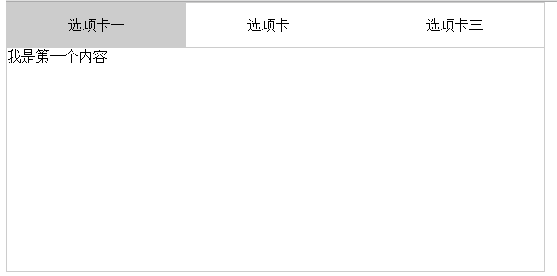
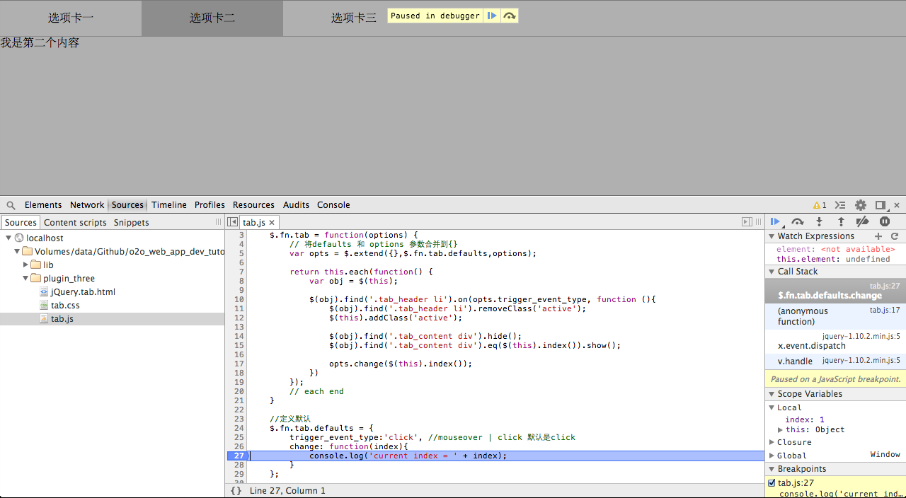

1. How to write jQuery plugin?
1.1. 前言
jQuery学习通常会经历三个阶段:
- 会用jquery是第一阶段
- 能抽象成插件是第二阶段
- 让插件足够灵活强大是第三阶段
现在，知道自己处在什么阶段了么？
这里假设读者已经通过第一阶段。如果jQuery还不够熟悉，请继续http://api.jquery.com
1.2. jQuery支持2种插件方式
- $.somePlugin
- $.fn.somePlugin
1.2.1. Global工具类的插件
比如
$.trim('hello world ')
这个方法是用于去掉空格的工具方法。它其实是给jQuery对象上增加了trim方法。
此种插件一般是工具类的方法。
1.2.2. 基于selector的插件
比如
$('.mytab').tab({
change: function(index){
console.log('current index = ' + index);
}
});
这实际是一个tab插件最简单的用法。
这个插件的特点是它前面必须是选择器，那么就可以是一个也可以多个，因为选择器有很多种，选择器返回的是数组，比如例子中的.mytab，在一个html文档里可以有多个
比如
<div class='mytab'>
</div>
<div class='mytab'>
</div>
<div class='mytab'>
</div>
<div class='mytab'>
</div>
这样就可以形成4个tab里。
jQuery的哲学是“write less，do more”,它做到了么？
1.2.3. 我们要讲的是后者
相比较而言，工具类的插件基本没有难度，它就是普通的function，即没有配置也没有selector，所以这里不做介绍。 而基于selector的插件复用程度高，又是基于配置的，在实际中应用非常广泛，是我们本节介绍的重点。
1.3. 什么是Tab？

1.3.1. 看一下小灰灰的tab v1
<!doctype html>
<html lang="en">
<head>
<meta charset="UTF-8">
<title>Document</title>
<style>
*{
margin: 0;
padding: 0;
list-style: none;
}
#tab {
width: 600px;
height: 300px;
border: 1px solid #ccc;
}
#tab > div{
display: none;
}
#tab_btn {
height: 50px;
line-height: 50px;
border-bottom: 1px solid #ccc;
}
#tab_btn li {
float: left;
width: 200px;
text-align: center;;
}
#tab_btn li.on{
background: #ccc;
}
</style>
</head>
<body>
<div id="tab">
<ul id="tab_btn">
<li class="on">选项卡一</li>
<li>选项卡二</li>
<li>选项卡三</li>
</ul>
<div style="display:block">我是第一个内容</div>
<div>我是第二个内容</div>
<div>我是第三个内容</div>
</div>
<script src="../lib/jquery-1.10.2.min.js"></script>
<script>
$('#tab_btn li').on('mouseover', function (){
$('#tab_btn li').removeClass('on');
$(this).addClass('on');
$('#tab div').hide();
$('#tab div').eq($(this).index()).show();
})
</script>
</body>
</html>
1.3.2. 它有几个明显问题
- 样式与js代码没有和html分离
- tab功能实现里，但无法复用，因为他用的是id方式
- tab的骨架html模板也不合理
1.3.3. 狮子的故事
曾经有一个小伙伴，写下来这样的代码
<ul id="tab_btn">
<li class="lion">选项卡一</li>
<li>选项卡二</li>
<li>选项卡三</li>
</ul>
然后我在读css代码的时候，发现
.lion {
...
}
我看了很久，lion是狮子的意思，那这里呢？
后来才明白，原来是li on的意思，也就是选中的tab的状态是on。
命名是非常容易闹笑话的，其实，这里用active更合适
1.3.4. 看一下小灰灰的tab v2
提取css和js的部分不是本章重点，下面比较一下重构后的tab骨架结构
之前的tab骨架
<div id="tab">
<ul id="tab_btn">
<li class="on">选项卡一</li>
<li>选项卡二</li>
<li>选项卡三</li>
</ul>
<div style="display:block">我是第一个内容</div>
<div>我是第二个内容</div>
<div>我是第三个内容</div>
</div>
重构后的代码
<div id="tab">
<div class="tab_header">
<ul>
<li class="active">选项卡一</li>
<li>选项卡二</li>
<li>选项卡三</li>
</ul>
</div>
<div class="tab_content">
<div class='tab_content_item' style="display:block">
我是第一个内容
</div>
<div class='tab_content_item'>
我是第二个内容
</div>
<div class='tab_content_item'>
我是第三个内容
</div>
</div>
</div>
这样的代码结构是不是更为清晰呢？
1.3.5. 重构行内样式
还有点小瑕疵，下面代码用了行内样式
<div class='tab_content_item' style="display:block">
我是第一个内容
</div>
修改如下
// html
<div class='tab_content_item active'>
我是第一个内容
</div>
// css
.tab_content .active{
display:block;
}
把行内样式抽象成状态，继而让代码更具可读性
1.3.6. v2的js
结构改了，js也一定做了修改，tab.js具体内容如下：
;$(function(){
$('.tab_header li').on('mouseover', function (){
$('.tab_header li').removeClass('active');
$(this).addClass('active');
$('.tab_content div').hide();
$('.tab_content div').eq($(this).index()).show();
})
});
1.3.7. 点评
v2的js只是根据tab的骨架接口修改而进行了简单修改，主要是dom selector的修改
没有什么特别值得说明的。
1.3.8. 让我们看看一个页面多个tab，它如何？
详见 jQuery.tab_more.html
出现的问题是在第二个tab上滑动的时候，更新的是第一个tab content，这是为什么呢？
答：js代码写的太随意，没有注意控制组件自身管控范围
不严谨是写代码的大忌
1.4. 开始写第一个插件
代码位于plugin_first
让我们动手改造一下tab.js吧：
1.4.1. 代码
;(function($) {
$.fn.tab = function(options) {
// 将defaults 和 options 参数合并到{}
var opts = $.extend({},$.fn.tab.defaults,options);
return this.each(function() {
var obj = $(this);
$(obj).find('.tab_header li').on('mouseover', function (){
$(obj).find('.tab_header li').removeClass('active');
$(this).addClass('active');
$(obj).find('.tab_content div').hide();
$(obj).find('.tab_content div').eq($(this).index()).show();
})
});
// each end
}
//定义默认
$.fn.tab.defaults = {
};
})(jQuery);
这段代码除了套用jQuery plugin模板外，就是几处select变成基于obj的查找的selector，其他与之前无异。
是不是很简单？
1.4.2. 解释一下配置项
// 将defaults 和 options 参数合并到{}
var opts = $.extend({},$.fn.tab.defaults,options);
1.4.3. 缓存this
// 将defaults 和 options 参数合并到{}
var obj = $(this);
1.4.4. select和$.fn
1.4.5. 调用方式
<script>
$(function(){
$('.tab').tab();
});
</script>
是不是更简单？
1.4.6. jQuery plugin template
;(function($) {
$.fn.XXXXXX = function(options) {
// 将defaults 和 options 参数合并到{}
var opts = $.extend({},$.fn.XXXXXX.defaults,options);
return this.each(function() {
var obj = $(this);
...
});
// each end
}
//定义默认
$.fn.XXXXXX.defaults = {
};
})(jQuery);
1.4.7. 插件特点
有默认项
$.fn.XXXXXX.defaults
基于selector
return this.each(function() { var obj = $(this); ... });
解读：
- 有默认项，是约定大约配置，让用户用的时候如果没有个性化需求，可以很简单，安装插件的默认配置走，如果有个性化需求，修改配置项，同样很简单
- 基于selector意味着你可以复用，给tag或class应用此插件，以便写更少代码，完成更多功能
亲，你明白插件的好处了么？如果没明白继续往下看
1.5. jQuery插件配置项
这其实算一个高级话题：
- 会用jquery是第一阶段
- 能抽象成插件是第二阶段
- 让插件足够灵活强大是第三阶段
代码位于plugin_second
配置项分2类
- 普通配置项
- 回调函数
1.5.1. 迭代1：普通配置项
回顾一下之前tab，发现我们的tab是只能鼠标移动到上面才能切换，那是不是所有tab都这样呢？ 当然不是了，我们看到很多网站的tab都是点击切换的，那么我们如何能让我们的tab支持这2种方式呢？
1.5.2. 支持tab触发事件选项
;(function($) {
$.fn.tab = function(options) {
// 将defaults 和 options 参数合并到{}
var opts = $.extend({},$.fn.tab.defaults,options);
return this.each(function() {
var obj = $(this);
$(obj).find('.tab_header li').on(opts.trigger_event_type, function (){
$(obj).find('.tab_header li').removeClass('active');
$(this).addClass('active');
$(obj).find('.tab_content div').hide();
$(obj).find('.tab_content div').eq($(this).index()).show();
})
});
// each end
}
//定义默认
$.fn.tab.defaults = {
trigger_event_type:'click', //mouseover | click 默认是click
};
})(jQuery);
这就是普通配置项的例子，配置项的值是js支持的类型
1.5.3. 示例1
首先看一下plugin_second/jQuery.tab.html它没有任何变化
<script>
$(function(){
$('.tab').tab();
});
</script>
默认项是click，所以这个tab只能点击
1.5.4. 示例2
看一下plugin_second/jQuery.tab_more.html，第一个tab只能点击，第二个tab只能鼠标划过
<script>
$(function(){
$('.tab_click').tab({
trigger_event_type:'click', //mouseover | click 默认是click
});
$('.tab_mouseover').tab({
trigger_event_type:'mouseover', //mouseover | click 默认是click
});
});
</script>
这里补充一点：第一个tab完全和例子一样，既然默认项都是click，再写的话就真有点 脱裤子放屁-多此一举 了
1.5.5. 迭代2：回调函数
jquery_plugin/plugin_three
既然用tab，就是利用它可以在一个地方显示多个内容，点击的时候切换对应的tab content，tab内容不可能都是静态的，那么这时候怎么办？
是不是应该在点击的时候更改内容呢？答案是回调函数，笨啦，前面不是说配置项有2种么？
1.5.6. 回调函数
这就是普通配置项的例子，配置项的值是js支持的类型
;(function($) {
$.fn.tab = function(options) {
// 将defaults 和 options 参数合并到{}
var opts = $.extend({},$.fn.tab.defaults,options);
return this.each(function() {
var obj = $(this);
$(obj).find('.tab_header li').on(opts.trigger_event_type, function (){
$(obj).find('.tab_header li').removeClass('active');
$(this).addClass('active');
$(obj).find('.tab_content div').hide();
$(obj).find('.tab_content div').eq($(this).index()).show();
opts.change($(this).index());
})
});
// each end
}
//定义默认
$.fn.tab.defaults = {
trigger_event_type:'click', //mouseover | click 默认是click
change: function(index){
console.log('current index = ' + index);
}
};
})(jQuery);
1.5.7. 生效了么？
打开jquery_plugin/plugin_three/jQuery.tab.html

1.5.8. 变动
增加了change配置项
//定义默认 $.fn.tab.defaults = { ...... change: function(index){ console.log('current index = ' + index); } };
在插件内部调用了此回调函数
return this.each(function() { var obj = $(this); $(obj).find('.tab_header li').on(opts.trigger_event_type, function (){ ...... opts.change($(this).index()); }) });
1.5.9. 回调函数最需要注意的问题
- 调用场合，在什么地方调用，这是生命周期的核心问题
- 参数，确保在调用处有这些值
- 回调函数也要有默认行为的
1.5.10. 总结
| 配置项类型 | 数据类型 | 特点 |
| 普通配置项 | js基本类型 | 不可变 |
| 回调函数配置项 | 函数 | 可变行为 |
1.5.11. 迭代3：重构代码
jquery_plugin/plugin_four
;(function($) {
/**
* 公共函数: 初始化tab出发事件
*/
function init_tab_trigger_event(container,opts) {
$(container).find('.tab_header li').on(opts.trigger_event_type, function (){
$(container).find('.tab_header li').removeClass('active');
$(this).addClass('active');
$(container).find('.tab_content div').hide();
$(container).find('.tab_content div').eq($(this).index()).show();
opts.change($(this).index());
})
}
/**
* 公共函数: 初始化tab出发事件
*/
function init_with_config(opts){
_init_aaa_with_config(opts);
_init_bbb_with_config(opts);
_init_ccc_with_config(opts);
}
/**
* 私有函数
*/
function _init_aaa_with_config(opts){
}
function _init_bbb_with_config(opts){
}
function _init_ccc_with_config(opts){
}
$.fn.tab = function(options) {
// 将defaults 和 options 参数合并到{}
var opts = $.extend({},$.fn.tab.defaults,options);
return this.each(function() {
var obj = $(this);
// 根据配置进行初始化
init_with_config(opts);
// 初始化tab出发事件
init_tab_trigger_event(obj,opts);
});
// each end
}
//定义默认
$.fn.tab.defaults = {
trigger_event_type:'click', //mouseover | click 默认是click
change: function(index){
console.log('current index = ' + index);
}
};
})(jQuery);
1.5.12. 将插件核心逻辑，抽象成公共函数
return this.each(function() {
var obj = $(this);
// 根据配置进行初始化
init_with_config(opts);
// 初始化tab出发事件
init_tab_trigger_event(obj,opts);
});
1.5.13. 将大的公共函数拆解成n个私有函数
/**
* 公共函数: 初始化tab出发事件
*/
function init_with_config(opts) {
// 调用私有函数
_init_aaa_with_config(opts);
// 调用私有函数
_init_bbb_with_config(opts);
// 调用私有函数
_init_ccc_with_config(opts);
}
/**
* 私有函数
*/
function _init_aaa_with_config(opts) {
}
function _init_bbb_with_config(opts) {
}
function _init_ccc_with_config(opts) {
}
1.5.14. 注意注释和编码规范
函数注释
/**
* 私有函数
*/
function _init_aaa_with_config(opts) {
}
函数内注释
// 调用私有函数
_init_ccc_with_config(opts);
函数体前面加一个空格
1.6. 使用grunt创建项目
- Sample jQuery plugin gruntfile (as generated by the
init:jquerytask)
grunt init:jquery
1.7. 如何发布到jquery plugin官方网站上
jquery插件标准化
1月16日，jQuery Foundation发布了新版插件资源库，以期能够为jQuery 核心代码库的第三方开发带来更好的支持与促进。
自从一年多以前，早先的jQuery插件站点关闭以来，jQuery Foundation团队就在着手搭建一个能够更智能地抵御垃圾的插件系统。作为jQuery Foundation的秘书长，Scott Gonzalez同时也是新站点在GitHub上最大的贡献者。他说到，这个新站点“将通过某个大多数垃圾制造者都不会关注的提交过程 —— 修订控制系统，来减少垃圾的数量。”利用GitHub钩子（Hooks），第三方jQuery插件的开发者将获得前所未有的丰富工具集。
“托管在GitHub或者Bitbucket这样的平台上的一大好处是，作为用户，你可以直接获得一系列功能。比方说：你可以联系作者，你可以看到代码是否还在继续维护，你也可以检查bug报告或提交bug，甚至可以提交bug 的补丁。这在之前的站点上多数都做不到。我们认为，促使用户使用能够免费提供这些功能的服务，并且在已有大量用户每天都在使用的环境中工作，是一种巨大的进步。” Gonzalez说到。
要发布你的jQuery插件，你需要利用Post-receive钩子，以及一个Package 清单（manifest）文件。自动化的流程正在创建中。“David Radcliffe已经提交了一个Pull request，为站点新加入了一个Service钩子，使得用户不必再手动填写钩子的URL。我们也计划创建一个能够自动生成清单文件的Grunt任务。” Gonzalez说到。
随着jQuery 2.0的即将到来，现有插件的作者们需要将他们的插件重新发布到新的平台。Gonzalez和其他jQuery Foundation的成员希望为整个社区的积极参与搭建好舞台。“新插件站点的一大亮点是其100%开源，因此整个社区可以建议新特性、讨论特性的优缺点，乃至开发实现新特性。我们非常乐于看到能够为我们的用户提供更好的服务，并把与我们的代码项目同等程度的透明性以及开发性带给我们的这个站点项目，以实现更快的迭代。”
查看英文原文：jQuery's Github-Driven Plugin Repository Launched 上面是infoq的文章
详细步骤：http://plugins.jquery.com/docs/publish/
我总结一下：
1、Add a Post-Receive Hook 这步必须做
学习一下https://help.github.com/articles/post-receive-hooks不错哦
http://plugins.jquery.com/docs/publish/
Settings -> Service Hooks -> WebHook URLs
http://plugins.jquery.com/postreceive-hook
2、＊jquery.json可以用grunt生成
grunt init:jquery
3、发布的tag必须和＊jquery.json里的版本一样，可以用v开头
the tag should be either "0.1.1" or "v0.1.1"
建议说不用git tag -f 来覆盖老版本的tag
1.8. 实践作业
答题的同学，还有实践作业，每个人写一个jQuery插件，使用grunt创建，发布到github上，并在jQuery官方网站可以搜到
例如 http://plugins.jquery.com/?s=ztree
1.9. 笔试
插件有几种？
文中举了几个例子？分别用于阐述什么问题
插件配置项有几种，举例说明
如何重构代码
grunt 是做什么的，如果使用grunt创建jQuery插件
如何发布插件
为什么缓存this